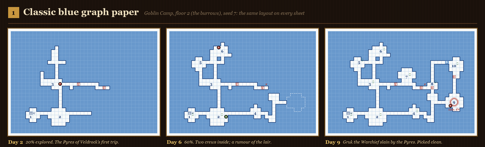
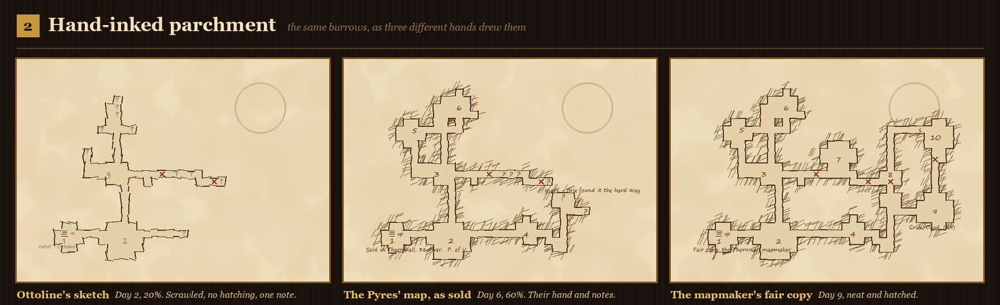
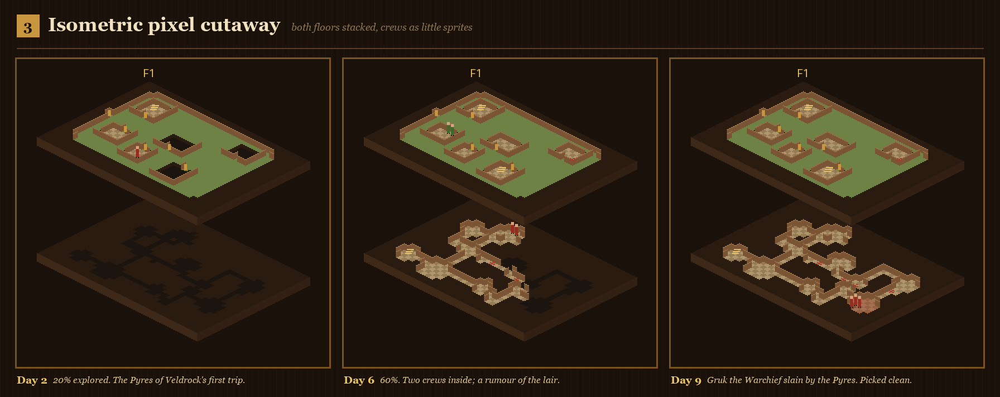
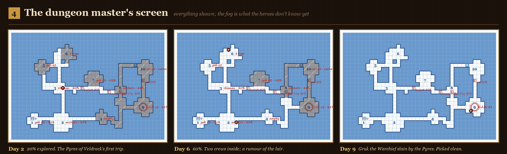
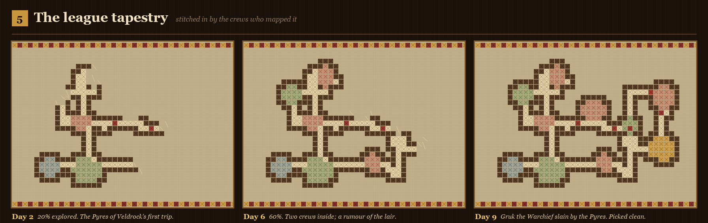
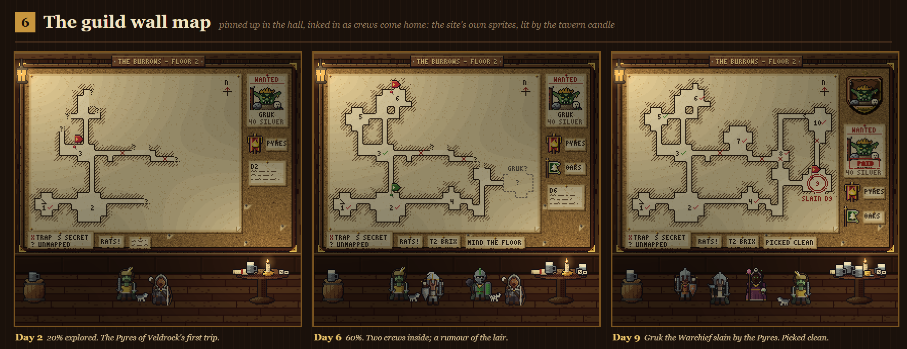

Dungeon map concepts
Six ways the Adventurers League could draw its dungeons: one dungeon at three moments in a league, as crews explore it room by room.






Six ways the Adventurers League could draw its dungeons: one dungeon at three moments in a league, as crews explore it room by room.





